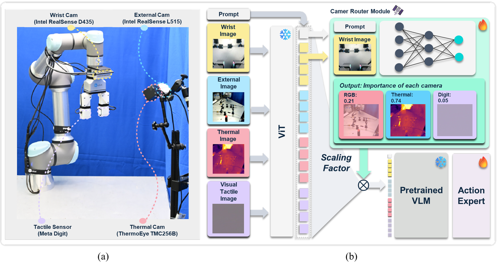
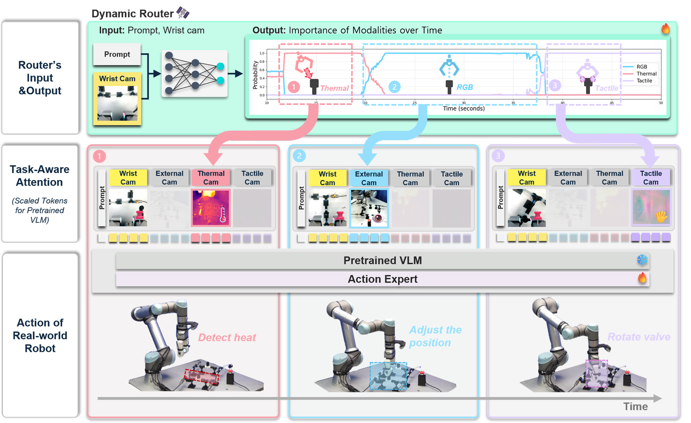
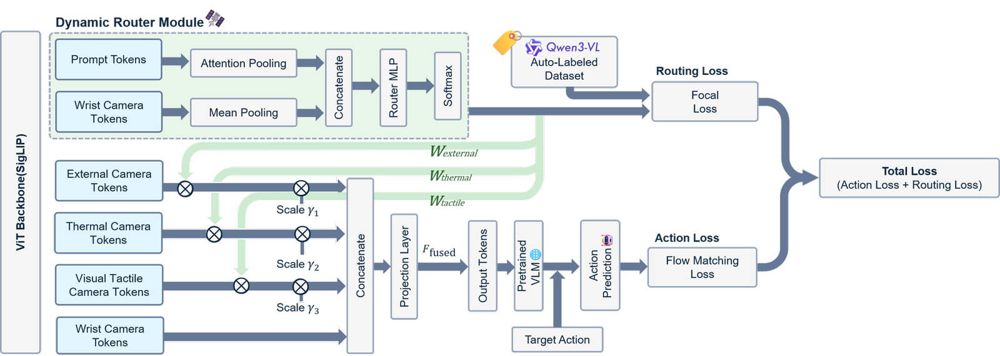
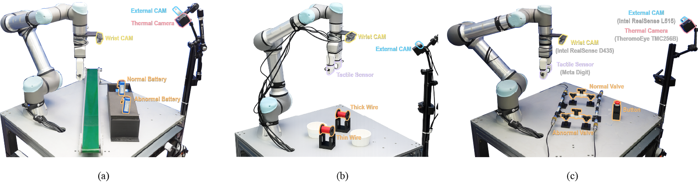
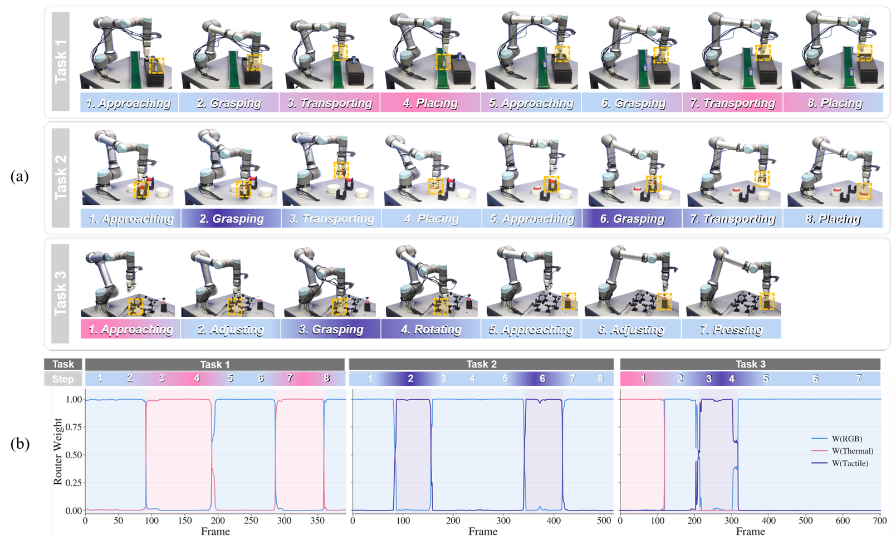
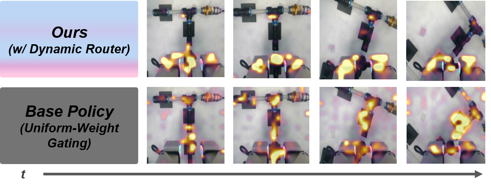

Under review
Abstract
Motivation
The importance of sensory information varies with the task. The human cognitive system handles this through active perception: it modulates the weight of each sensory channel according to task context and goal, suppressing irrelevant signals rather than processing everything uniformly. When turning off an overheated electronic device, a person relies on visual localization while exploring, shifts attention to thermal sensing when assessing risk, and prioritizes tactile feedback while grasping.
Static fusion in current multimodal VLAs has two failure modes. First, redundancy and interference — projecting irrelevant data into high-dimensional feature spaces hinders representation learning and slows convergence. Second, reduced robustness — at certain phases, irrelevant modalities act as noise that dilutes meaningful information. We therefore route sensory streams dynamically instead of fusing them uniformly.

Figure 1: Sensor configuration (wrist RGB, external RGB, thermal, visual-tactile) and the Camera Router module, which predicts a per-stream importance from the prompt and the wrist image and scales the corresponding visual tokens before they enter the pretrained VLM.
Contributions
- Task-Aware Sensory Routing. A Dynamic Router that uses the wrist camera as an anchor view together with the task prompt to estimate the relevance of auxiliary sensory streams in real time.
- Improved Long-Horizon Manipulation. By selectively attenuating task-irrelevant streams, the method outperforms the uniform-fusion baseline on long-horizon manipulation tasks.
- Scalable VLM Supervision. A VLM-based auto-labeling pipeline that produces routing labels without additional data collection or frame-level human annotation.
Framework

Figure 2: Operational process of the proposed model. (a) Dynamic Router Module: the router uses the wrist camera and task prompt to analyze the current context and predict the relevance of auxiliary sensory streams in real time. (b) Task-Aware Sensory Routing: based on that prediction, the model selectively attends to the most informative visual streams. (c) Real-world Execution: robot action sequence for Task 3.

Figure 3: Overview of VLA training with the Dynamic Router. The router predicts importance weights $\mathbf{w}$ for the auxiliary streams and acts as a gating mechanism, letting the VLA framework adaptively prioritize task-relevant visual information during action training.
We build on the pretrained $\pi_{0.5}$ policy, which consists of a PaliGemma vision-language backbone and a separate action expert. All RGB, thermal and tactile observations are processed by the shared SigLIP vision encoder, with thermal and tactile inputs converted into three-channel image representations. A Camera Router is inserted between the SigLIP encoder and the PaliGemma transformer to estimate the task relevance of the auxiliary views and gate their features before multimodal fusion.
During task adaptation, the SigLIP encoder and the original parameters of the Gemma component and action expert remain frozen. Only their LoRA adapters ($r=16$, $\alpha=16$), the Camera Router, the learnable gating parameter $\boldsymbol{\gamma}$ and the fusion projection layer are optimized. Training uses AdamW with batch size 8 for 50K steps.
Router architecture
The router takes the wrist camera image and the task prompt as inputs. Attention pooling over the prompt tokens gives the text feature $h_{\mathrm{prompt}}$; mean pooling over the wrist camera tokens gives the visual feature $h_{\mathrm{wrist}}$. The wrist camera serves as a fixed anchor view that is always active during execution, providing stable proximal information for close-range robot-object interaction.
With $M$ auxiliary streams to route (here external RGB, thermal and tactile, so $M=3$), the router input is $\mathbf{x} = [h_{\mathrm{prompt}};\, h_{\mathrm{wrist}}]$ and it predicts a categorical distribution over them:
$$\mathbf{w} = \mathrm{Softmax}(\mathrm{MLP}(\mathbf{x})) \in [0,1]^{M}, \qquad \sum_{m=1}^{M} w_m = 1.$$Dynamic gating
For each auxiliary stream $m \in \{\mathrm{external},\, \mathrm{thermal},\, \mathrm{tactile}\}$, the scalar weight $w_m$ is applied together with a stream-specific learnable channel-wise scaling $\boldsymbol{\gamma}_m \in \mathbb{R}^{D}$:
$$F'_m = \boldsymbol{\gamma}_m \odot (w_m \cdot F_m),$$where $F_m$ are the original feature tokens of stream $m$ and $F'_m$ the gated feature. The scaling parameter mitigates abrupt changes during gating and stabilizes training. The wrist camera feature bypasses routing, is concatenated along the channel dimension with the gated auxiliary features, and the result is projected back to the embedding dimension. The fused feature $F_{\mathrm{fused}}$ is what the pretrained VLM sees — visual information selectively emphasized by task context.
The two objectives are optimized jointly, so the router learns from both explicit routing supervision and the action prediction objective:
$$L_{\mathrm{total}} = L_{\mathrm{action}} + \lambda L_{\mathrm{routing}}.$$Imbalanced routing learning
Certain modalities are not needed throughout a task; they matter only at sparse moments involving contact or decision-making. This induces an imbalance in the ground-truth routing labels whose severity varies across tasks. To complement minority-class learning under such imbalance, the router is trained with Focal Loss ($\alpha_{\text{focal}}=0.25$, $\beta=2.0$):
$$L_{\mathrm{routing}} = -\alpha_{\text{focal}} (1 - p_t)^{\beta} \log(p_t).$$VLM Auto-Labeling
Manually annotating task stages or required sensory data for every frame of a large-scale dataset is a scalability bottleneck. We instead use Qwen3-VL to recognize task phases in the demonstration videos and emit discrete modality-relevance labels that supervise the router, which then predicts continuous routing weights at execution time.
A single frame is ambiguous — a static grasping pose is hard to place between the onset of Transporting and Placing. We therefore use a History-Aware Prompting strategy that pairs the current visual information with past action history. Input videos are segmented into chunks of $T=30$ frames, and $N_s=10$ frames are uniformly sampled per chunk as VLM input. The prompt is composed of:
- Role — the assigned persona defining the agent's behavioral context.
- Task Description — the overall objective of the task.
- Workflow Definition — the sequence of actions during task execution.
- Gripper Action — the scalar value representing the gripper's opening width.
- Action History — a summary of the previous three chunks.
Given the sampled frames and this context, the VLM infers the task phase from the robot's motion, gripper state, visible objects and consistency with the predefined workflow, and assigns one categorical routing label from $\{\text{external RGB},\,\text{thermal},\,\text{tactile}\}$ to each 30-frame chunk, propagated to all frames in that chunk.
Against independent human annotations over 150 demonstration episodes, frame-level agreement was 82.4%, with most discrepancies at task-phase boundaries rather than in modality selection. Segmental F1 scores — F1@10: 96.3%, F1@25: 93.8%, F1@50: 79.0% — indicate that the temporal structure and modality choices produced by the VLM closely track human annotation.
Experiment
50 expert demonstrations were collected per task. Each sample contains State and Action (7-dimensional vectors: six joint angles plus gripper state, and six target joint angles plus gripper command), Image, and a natural-language Task prompt. Images were collected at 15 Hz from wrist and external RGB cameras ($640\times480$), a thermal camera ($256\times192$) and a tactile sensor ($640\times480$).
All three tasks require thermal or tactile information beyond RGB, and in each of them the auxiliary modality is informative only during specific phases — which is what makes them a test of selective routing rather than of fusion capacity. Evaluation trials were evenly divided between two predefined object locations about 30 cm apart, with the object position further perturbed by roughly 5 cm at each reset.

Figure 4: Experimental setup for each task. (a) Battery Sorting, (b) Wire Selection, (c) Valve Operation. All tasks use a dual RGB camera system, and each setup adds task-specific modalities such as a thermal camera or a tactile sensor.
Task 1 — Battery Sorting
Visual + Thermal
An overheated battery goes in the rear bin; a normal-temperature battery is placed upright on a moving conveyor belt. The two are indistinguishable in RGB, so thermal sensing is necessary for classification. A trial fails if either battery is misclassified or if the normal battery falls over on the belt.
Task 2 — Wire Selection
Visual + Tactile
Two visually identical wires differing by about 0.4 mm in diameter are sorted by thickness — thick to the front bin, thin to the rear. Visual discrimination is unreliable, so thickness must be inferred from tactile feedback acquired during grasping.
Task 3 — Valve Operation
Visual + Thermal + Tactile
An emergency shutdown after pipeline overheating: identify the overheated valve, rotate it closed, then activate the emergency switch. Thermal identifies the valve; tactile provides contact feedback for stable manipulation. Unlike Tasks 1 and 2, this task requires switching between auxiliary modalities across phases.
Results
Task success rate
The RGB-only baseline (w/o Multimodal) failed on every task. Uniform-Weight Gating reached an average success rate of 10.00%, whereas the proposed Dynamic Router with wrist-camera and prompt inputs reached 83.33%.
| w/o Router | w/ Router | ||||
|---|---|---|---|---|---|
| Policy / Router Input | w/o Multimodal | Uniform-Weight Gating | Wrist Cam + Proprio | Ext. Cam + Prompt | Wrist Cam + Prompt |
| Task 1 | 0.00% (0/10) | 30.00% (3/10) | 20.00% (2/10) | 90.00% (9/10) | 90.00% (9/10) |
| Task 2 | 0.00% (0/10) | 0.00% (0/10) | 60.00% (6/10) | 70.00% (7/10) | 90.00% (9/10) |
| Task 3 | 0.00% (0/10) | 0.00% (0/10) | 10.00% (1/10) | 60.00% (6/10) | 70.00% (7/10) |
| Average SR | 0.00 ± 0.00% | 10.00 ± 17.32% | 30.00 ± 26.46% | 73.33 ± 15.28% | 83.33 ± 11.55% |
Table 1: Quantitative comparison of task success rates. Bold indicates the best result in each row.
Among router inputs, Wrist Cam + Prompt performs best. External Cam + Prompt is competitive at 73.33%, but 10 points lower — the physical distance and viewpoint of the fixed external view constrain how well it captures fine-grained contact or the precise timing of manipulation, whereas the wrist camera gives an ego-centric close-range view that makes object state changes and task phases easier to distinguish. Wrist Cam + Proprio is substantially worse, and on Task 1 it even falls below the baseline — a negative transfer consistent with shortcut learning, where the router latches onto proprioceptive cues correlated with task phase instead of learning robust visual features.
Long-horizon behavior
Binary success rates do not capture how far a policy gets before failing, so we also report Mean Task Progress:
$$\mathrm{MTP}_t = \frac{100}{M N_t} \sum_{i=1}^{M} k_i,$$where $k_i$ is the number of consecutively completed subtasks before the first failure in rollout $i$, $N_t$ the total number of subtasks in task $t$, and $M$ the number of rollouts. The baseline ranges from 27.1% to 53.8% MTP and completes the full task in only 3 of 30 rollouts. The proposed method ranges from 91.4% to 97.5%.
| Task | Method | Mean Task Progress | Full-Task Success |
|---|---|---|---|
| Task 1 | Base Policy (Uniform-Weight Gating) | 4.30/8 (53.8%) | 3/10 (30%) |
| Ours (Dynamic Router) | 7.50/8 (93.8%) | 9/10 (90%) | |
| Task 2 | Base Policy (Uniform-Weight Gating) | 2.70/8 (33.8%) | 0/10 (0%) |
| Ours (Dynamic Router) | 7.80/8 (97.5%) | 9/10 (90%) | |
| Task 3 | Base Policy (Uniform-Weight Gating) | 1.90/7 (27.1%) | 0/10 (0%) |
| Transformer-Fusion | 2.00/7 (28.6%) | 0/10 (0%) | |
| Ours (Dynamic Router) | 6.40/7 (91.4%) | 7/10 (70%) |
Table 2: Performance evaluation across tasks. A Transformer-Fusion baseline applying multi-head self-attention to the post-SigLIP sensory tokens completes the early subtasks but degrades as sensory relevance shifts across stages.
The failures that remain for the proposed method are mostly low-level manipulation errors — objects dropped during transport, unsuccessful grasps — rather than visible errors in modality selection.

Figure 5: Dynamic modality routing across long-horizon tasks. (a) Multi-step execution sequences for the three evaluation tasks. (b) Router weights for Tasks 1–3, showing how the model adjusts the contributions of RGB, thermal and tactile modalities according to the task phase.
Labeling strategy
| Task | No Labeled | Human Labeled | VLM Labeled (Ours) |
|---|---|---|---|
| Task 1 | 30.0 | 100.0 | 90.0 |
| Task 2 | 0.0 | 90.0 | 90.0 |
| Task 3 | 0.0 | 70.0 | 70.0 |
| Average | 10.0 | 86.7 | 83.3 |
Table 3: Success rate (%) across labeling methods. VLM-generated routing labels reach 83.3% against 86.7% for human annotation, suggesting VLM labeling is a practical complement to human annotation as frame-level annotation cost grows with dataset scale — though the generated labels may still carry biases from the pretrained VLM.
Focal loss under label imbalance
| Task | Loss | Accuracy (%) | Macro Recall (%) | Minority Recall (%) | NLL |
|---|---|---|---|---|---|
| Task 1 | CE | 99.24 | 99.09 | 98.43 | 0.030 |
| Focal | 99.16 | 98.98 | 98.17 | 0.030 | |
| Task 2 | CE | 98.90 | 98.24 | 96.59 | 0.031 |
| Focal | 98.98 | 98.54 | 97.48 | 0.027 | |
| Task 3 | CE | 98.56 | 97.17 | 93.05 | 0.070 |
| Focal | 98.52 | 97.46 | 94.22 | 0.031 |
Table 4: Focal Loss vs. Cross-Entropy for router training. Overall accuracy is comparable across all three tasks (within 0.1 pp). The effect on the minority class is task-dependent: on the most balanced task (Task 1) CE is marginally better, while on the more imbalanced Tasks 2 and 3 Focal Loss improves macro and minority recall and calibration — most visibly in Task 3, where the sparse tactile-routing class gains 1.17 pp in recall and NLL drops from 0.070 to 0.031. Focal Loss is retained as an optional low-cost component, not as the source of the main results in Table 1. All numbers come from a single run per configuration, so small task-level differences should be read as trends.
Attention

Figure 6: Comparison of attention maps for the Base Policy and the Dynamic-Router policy, showing final-layer action-to-visual-token attention.
Real-World Experiments
Router output over time — Task 3: Rotate the valve on the hot side and hold down the front button
Live camera-selection probabilities alongside the router weights over time. The router shifts from thermal (locating the overheated valve) to external RGB (approach) to tactile (contact during rotation). Playback speed ×2.
Task 1 & Task 2 — Ours (w/ Dynamic Router)
Left — Task 1 (Battery Sorting): separate the hot batteries and place only the non-hot batteries onto the conveyor belt. Right — Task 2 (Wire Selection): move the thin wires to the back and the thick wires to the front. Playback speed ×2.
Task 3: Valve Operation — Ours (w/ Dynamic Router)
Rotate the valve on the hot side and hold down the front button. Playback speed ×2.
Task 3: Valve Operation — Baseline (w/o Dynamic Router)
Representative failures: rotated without a stable grasp, pressed the button without rotating, and failed to rotate. Playback speed ×2.
Conclusion
We proposed a task-aware sensory routing framework for robust multimodal robotic manipulation. The Dynamic Router uses wrist camera observations and task prompts to estimate modality importance in real time and attenuate task-irrelevant sensory inputs, and a VLM-based auto-labeling pipeline supplies router supervision without manual frame-level annotation or additional data collection. The resulting VLA model performs comparably to its human-labeled counterpart, and explicit sensory routing improves task success in scenarios requiring fine-grained reasoning over visual, tactile and thermal cues.
The current mechanism selects the single most informative auxiliary modality. Extending it to allow concurrent activation of complementary sensors — using stereo streams for depth estimation, for instance — is a promising direction for broader multimodal environments, and decoupled training with pre-trained routers may improve scalability. The evaluation is also limited to a single VLA backbone; assessing the routing mechanism across architectures and pretraining strategies remains important for establishing its general applicability.
Citation
@article{son2026taskaware,
author = {Son, Young-Chae and Lee, Jung-Woo and Choi, Yoon-Ji and Ko, Dae-Kwan and Lim, Soo-Chul},
title = {Task-Aware Modality Selection for Multimodal VLA in Robotic Manipulation},
year = {2026},
note = {Under review}
}